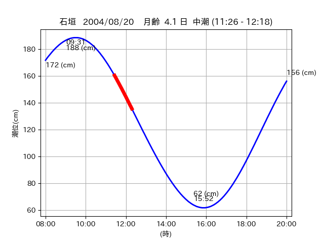
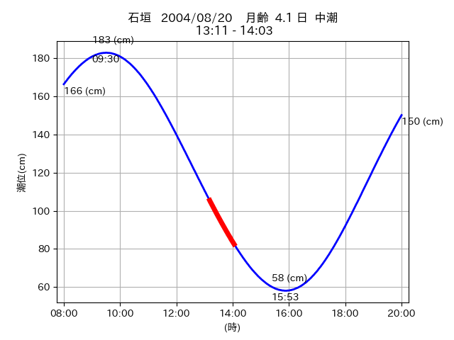
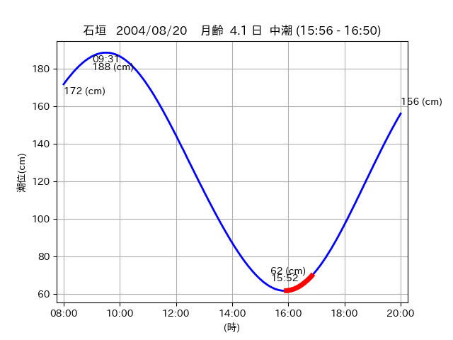

<!DOCTYPE html>
<html>
<head>
    
    <meta http-equiv="content-type" content="text/html; charset=UTF-8" />
    
        <script>
            L_NO_TOUCH = false;
            L_DISABLE_3D = false;
        </script>
    
    <style>html, body {width: 100%;height: 100%;margin: 0;padding: 0;}</style>
    <style>#map {position:absolute;top:0;bottom:0;right:0;left:0;}</style>
    <script src="https://cdn.jsdelivr.net/npm/leaflet@1.9.3/dist/leaflet.js"></script>
    <script src="https://code.jquery.com/jquery-3.7.1.min.js"></script>
    <script src="https://cdn.jsdelivr.net/npm/bootstrap@5.2.2/dist/js/bootstrap.bundle.min.js"></script>
    <script src="https://cdnjs.cloudflare.com/ajax/libs/Leaflet.awesome-markers/2.0.2/leaflet.awesome-markers.js"></script>
    <link rel="stylesheet" href="https://cdn.jsdelivr.net/npm/leaflet@1.9.3/dist/leaflet.css"/>
    <link rel="stylesheet" href="https://cdn.jsdelivr.net/npm/bootstrap@5.2.2/dist/css/bootstrap.min.css"/>
    <link rel="stylesheet" href="https://netdna.bootstrapcdn.com/bootstrap/3.0.0/css/bootstrap-glyphicons.css"/>
    <link rel="stylesheet" href="https://cdn.jsdelivr.net/npm/@fortawesome/fontawesome-free@6.2.0/css/all.min.css"/>
    <link rel="stylesheet" href="https://cdnjs.cloudflare.com/ajax/libs/Leaflet.awesome-markers/2.0.2/leaflet.awesome-markers.css"/>
    <link rel="stylesheet" href="https://cdn.jsdelivr.net/gh/python-visualization/folium/folium/templates/leaflet.awesome.rotate.min.css"/>
    
            <meta name="viewport" content="width=device-width,
                initial-scale=1.0, maximum-scale=1.0, user-scalable=no" />
            <style>
                #map_a5a94d3574ea9e9f41e5954c65c1ea01 {
                    position: relative;
                    width: 2048.0px;
                    height: 1600.0px;
                    left: 0.0%;
                    top: 0.0%;
                }
                .leaflet-container { font-size: 1rem; }
            </style>
        
</head>
<body>
    
    
            <div class="folium-map" id="map_a5a94d3574ea9e9f41e5954c65c1ea01" ></div>
        
</body>
<script>
    
    
            var map_a5a94d3574ea9e9f41e5954c65c1ea01 = L.map(
                "map_a5a94d3574ea9e9f41e5954c65c1ea01",
                {
                    center: [24.445, 124.27],
                    crs: L.CRS.EPSG3857,
                    ...{
  "zoom": 12,
  "zoomControl": true,
  "preferCanvas": false,
}

                }
            );

            

        
    
            var tile_layer_84bff8d83d9a435f1002fbce7d9b9558 = L.tileLayer(
                "https://cyberjapandata.gsi.go.jp/xyz/seamlessphoto/{z}/{x}/{y}.jpg",
                {
  "minZoom": 0,
  "maxZoom": 18,
  "maxNativeZoom": 18,
  "noWrap": false,
  "attribution": "\u5730\u7406\u9662\u5730\u56f3",
  "subdomains": "abc",
  "detectRetina": false,
  "tms": false,
  "opacity": 1,
}

            );
        
    
            tile_layer_84bff8d83d9a435f1002fbce7d9b9558.addTo(map_a5a94d3574ea9e9f41e5954c65c1ea01);
        
    
            var marker_18b6c9e17e56ca36ef134f246bf88d18 = L.marker(
                [24.5417, 124.3181],
                {
}
            ).addTo(map_a5a94d3574ea9e9f41e5954c65c1ea01);
        
    
            var icon_b8ae65fadcd8cef0313dbed65d940d40 = L.AwesomeMarkers.icon(
                {
  "markerColor": "blue",
  "iconColor": "white",
  "icon": "info-sign",
  "prefix": "glyphicon",
  "extraClasses": "fa-rotate-0",
}
            );
        
    
        var popup_8926433d1d7797f756c360055a036397 = L.popup({
  "maxWidth": "100%",
});

        
            
                var html_4cbdccd9fcf7826850afe4abe2c819c7 = $(`<div id="html_4cbdccd9fcf7826850afe4abe2c819c7" style="width: 100.0%; height: 100.0%;"><table><tr><td></td></tr><tr><td><center>20040820 No.1 </center></table></td></tr></table</div>`)[0];
                popup_8926433d1d7797f756c360055a036397.setContent(html_4cbdccd9fcf7826850afe4abe2c819c7);
            
        

        marker_18b6c9e17e56ca36ef134f246bf88d18.bindPopup(popup_8926433d1d7797f756c360055a036397)
        ;

        
    
    
                marker_18b6c9e17e56ca36ef134f246bf88d18.setIcon(icon_b8ae65fadcd8cef0313dbed65d940d40);
            
    
            var marker_7bb81ebee67142423ece983e5008c2ad = L.marker(
                [24.5563, 124.3318],
                {
}
            ).addTo(map_a5a94d3574ea9e9f41e5954c65c1ea01);
        
    
            var icon_50a9c47344716ce0a663b3c868d689de = L.AwesomeMarkers.icon(
                {
  "markerColor": "orange",
  "iconColor": "white",
  "icon": "info-sign",
  "prefix": "glyphicon",
  "extraClasses": "fa-rotate-0",
}
            );
        
    
        var popup_53d4e112310b962c89fcf690c93f5015 = L.popup({
  "maxWidth": "100%",
});

        
            
                var html_7e83bdff99e030c635a993e5bd2182fa = $(`<div id="html_7e83bdff99e030c635a993e5bd2182fa" style="width: 100.0%; height: 100.0%;"><table><tr><td></td></tr><tr><td><center>20040820 No.2 </center></table></td></tr></table</div>`)[0];
                popup_53d4e112310b962c89fcf690c93f5015.setContent(html_7e83bdff99e030c635a993e5bd2182fa);
            
        

        marker_7bb81ebee67142423ece983e5008c2ad.bindPopup(popup_53d4e112310b962c89fcf690c93f5015)
        ;

        
    
    
                marker_7bb81ebee67142423ece983e5008c2ad.setIcon(icon_50a9c47344716ce0a663b3c868d689de);
            
    
            var poly_line_5c27fb65ad8754b2c02ffc19e64e6b5a = L.polyline(
                [[24.5563, 124.3318], [24.5524, 124.3258]],
                {"bubblingMouseEvents": true, "color": "#00FFFF", "dashArray": null, "dashOffset": null, "fill": false, "fillColor": "#00FFFF", "fillOpacity": 0.2, "fillRule": "evenodd", "lineCap": "round", "lineJoin": "round", "noClip": false, "opacity": 1.0, "smoothFactor": 1.0, "stroke": true, "weight": 3}
            ).addTo(map_a5a94d3574ea9e9f41e5954c65c1ea01);
        
    
            var marker_096a9662b7b4537a90e211504a677a6f = L.marker(
                [24.4449, 124.2702],
                {
}
            ).addTo(map_a5a94d3574ea9e9f41e5954c65c1ea01);
        
    
            var icon_0350b76eccffb158470f5d4cf76c930b = L.AwesomeMarkers.icon(
                {
  "markerColor": "blue",
  "iconColor": "white",
  "icon": "info-sign",
  "prefix": "glyphicon",
  "extraClasses": "fa-rotate-0",
}
            );
        
    
        var popup_742f3225a58b6f1b2b9dc4195778d069 = L.popup({
  "maxWidth": "100%",
});

        
            
                var html_6727e777f8c1a3e55878ac48dc27885b = $(`<div id="html_6727e777f8c1a3e55878ac48dc27885b" style="width: 100.0%; height: 100.0%;"><table><tr><td></td></tr><tr><td><center>20040820 No.3 </center></table></td></tr></table</div>`)[0];
                popup_742f3225a58b6f1b2b9dc4195778d069.setContent(html_6727e777f8c1a3e55878ac48dc27885b);
            
        

        marker_096a9662b7b4537a90e211504a677a6f.bindPopup(popup_742f3225a58b6f1b2b9dc4195778d069)
        ;

        
    
    
                marker_096a9662b7b4537a90e211504a677a6f.setIcon(icon_0350b76eccffb158470f5d4cf76c930b);
            
</script>
</html>